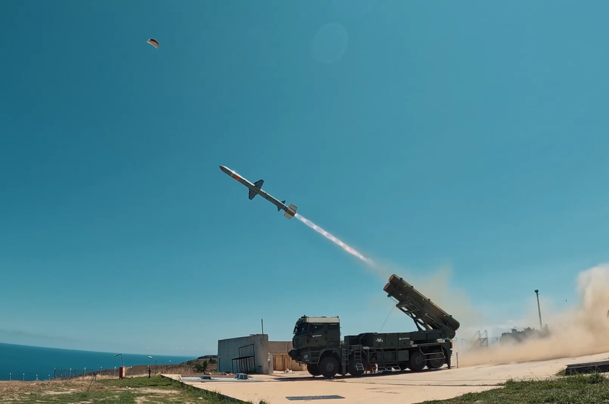
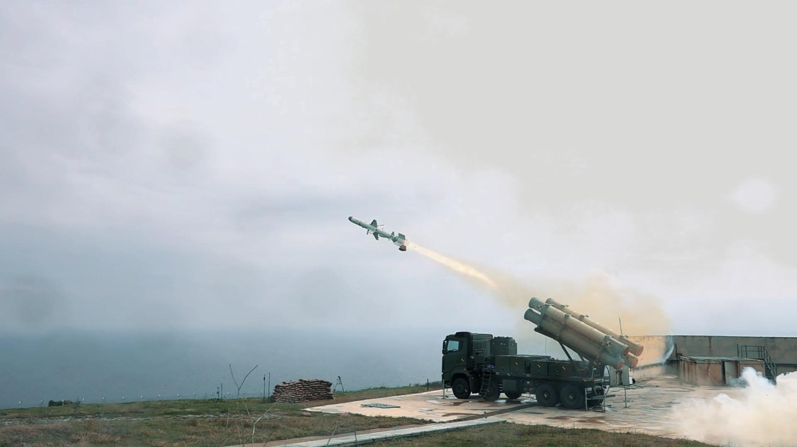
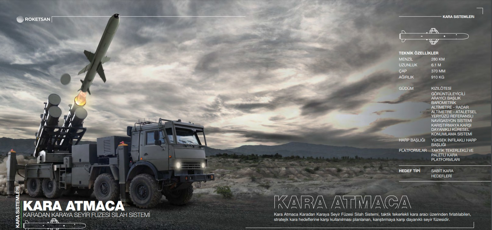

Karadan Karaya Seyir Füzesi
KARA ATMACA, taktik tekerlekli kara aracı üzerinden fırlatılabilen, stratejik kara hedeflerine karşı kullanılmak üzere geliştirilen uzun menzilli seyir füzesidir.
Sistem; karıştırmaya karşı dayanıklılık, gelişmiş seyrüsefer altyapısı ve görüntüleyici kızılötesi arayıcı başlık sayesinde sabit kara hedeflerine karşı hassas vuruş kabiliyeti sunar.
KARA ATMACA ayrıca üç boyutlu görev planlama, hedefte zamanlama (ToT, DToT, SToT), salvo atış ve yeniden saldırı modu gibi modern görev planlama ve taarruz yeteneklerine sahiptir.
280 km
6.1 m
370 mm
910 kg
IIR Arayıcı
Taktik Tekerlekli Araç
| Füze Tipi | Karadan karaya seyir füzesi |
| Adı | KARA ATMACA |
| Görev Alanı | Stratejik kara hedeflerine hassas taarruz |
| Azami Menzil | 280 km |
| Uzunluk | 6.1 m |
| Çap | 370 mm |
| Ağırlık | 910 kg |
| Terminal Güdüm | Görüntüleyici kızılötesi arayıcı başlık (IIR) |
| Ara Safha Güdüm | Ataletsel seyrüsefer sistemi (INS) + karıştırmaya dayanıklı GNSS |
| Seyrüsefer Yardımcıları | Barometrik altimetre, radar altimetre ve arazi referanslı seyrüsefer (TRN) |
| Harp Başlığı | Yüksek patlayıcı blast fragmentation / penetration harp başlığı |
| Atış Platformu | Taktik tekerlekli kara aracı |
| Hedef Seti | Sabit kara hedefleri, stratejik kara hedefleri, SAM bataryaları, sabit veya yeri değiştirilebilir lançerler |
| Karıştırma Dayanımı | Karıştırmaya karşı dayanıklı görev yapısı |
| Hava Koşulları | Her türlü hava koşulunda görev yapabilme |
| Öne Çıkan Özellik | Uzun menzilli, karadan fırlatılan, yüksek hassasiyetli yerli seyir füzesi |
| Görev Planlama | Üç boyutlu görev planlama |
| Hedefte Zaman | ToT (Time on Target) |
| Çoklu Platform Zamanlama | DToT (Different Platforms Time on Target) |
| Aynı Platform Zamanlama | SToT (Same Platform Time on Target) |
| Salvo Atış | Hedefi ateş altına alma / salvo atış modu |
| Yeniden Saldırı | Re-attack / yeniden saldırı modu |


